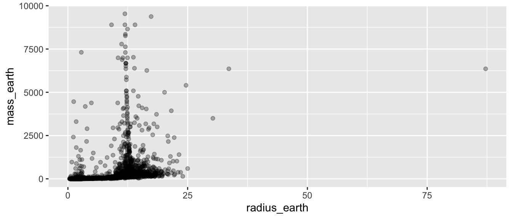
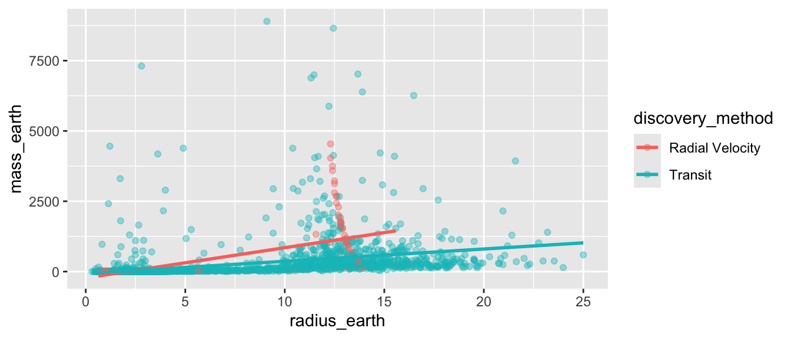
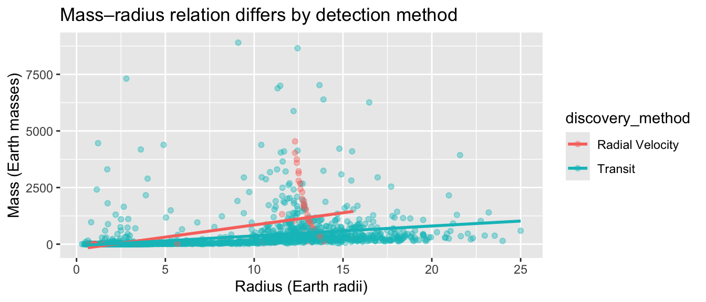
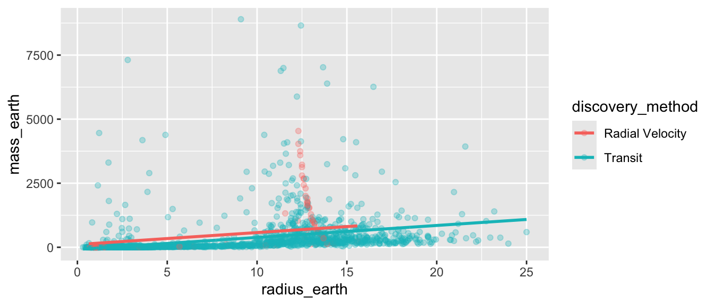
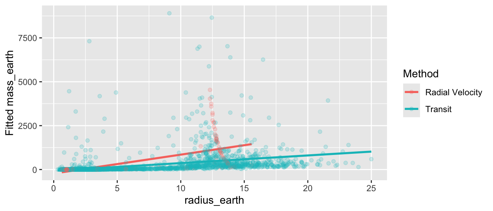
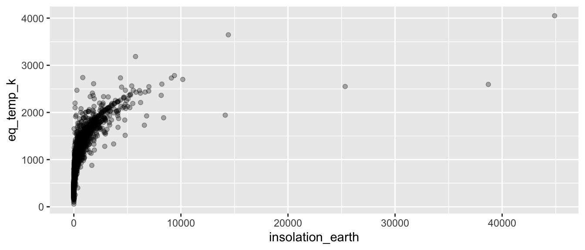

library(dplyr)
library(ggplot2)
library(moderndive)
library(exoplanets)
planets_lite <- planets |>
filter(!is.na(radius_earth), !is.na(mass_earth),
!is.na(discovery_method), !is.na(eq_temp_k)) |>
mutate(log_mass = log10(mass_earth),
log_radius = log10(radius_earth))
top2 <- planets_lite |> count(discovery_method, sort = TRUE) |>
slice_head(n = 2) |> pull(discovery_method)
pl2 <- planets_lite |> filter(discovery_method %in% top2)
planets_temp <- planets |>
filter(!is.na(eq_temp_k), !is.na(star_temp_k), !is.na(insolation_earth)) |>
mutate(log_insol = log10(insolation_earth))Solutions for the end-of-chapter exercises in Chapter 6 — Multiple Regression. Dataset: planets from exoplanets.
TipSection coverage at a glance
Exercises per section — count of prompts that touch each book section.
| Book section | # of exercises |
|---|---|
| Setup / EDA (chapter overview) | 4 |
| 6.1 One numerical + one categorical | 10 |
| 6.2 Two numerical explanatory variables | 7 |
| Model comparison / selection (cross-section) | 3 |
| Critical thinking / synthesis / open exploration | 12 |
Exercises by subsection — which prompts target each finer-grained subsection.
| Subsection | Exercises |
|---|---|
| Setup and chapter overview | EX6.1, EX6.2, EX6.3, EX6.4 |
| 6.1.1 EDA for numerical + categorical | EX6.5, EX6.6 |
| 6.1.2 Model with interactions | EX6.7, EX6.8, EX6.9, EX6.10 |
| 6.1.3 Model without interactions (parallel slopes) | EX6.11, EX6.12, EX6.13 |
| 6.1.4 Observed/fitted/residuals (interaction model) | EX6.14 |
| 6.2.1 EDA for two numerical predictors | EX6.15 |
| 6.2.2 Multiple regression — two numerical regressors | EX6.16, EX6.17, EX6.18, EX6.19, EX6.20 |
| 6.2.3 Observed/fitted/residuals (two-numerical model) | EX6.21 |
| Model comparison / selection | EX6.22, EX6.23, EX6.24 |
| Critical thinking / synthesis / open exploration | EX6.25, EX6.26, EX6.27, EX6.28, EX6.29, EX6.30, EX6.31, EX6.32, EX6.33, EX6.34, EX6.35, EX6.36 |
A note on coverage. The critical-thinking prompts deliberately cross-cut the subsections (model selection, partial-slope interpretation, parallel-slopes vs interaction, sample-size effects on R²).
Difficulty: ★ warm-up · ★★ standard · ★★★ critical thinking.
Setup and EDA
NoteEX6.1 — show question
EX6.1 (★) Run glimpse(planets). How many planets and how many variables?
Solution (reference: Chapter 6 overview).
6,278 × 28.
dim(planets)[1] 6278 28
NoteEX6.2 — show question
EX6.2 (★) Compute proportion of NA for mass_earth, radius_earth, eq_temp_k. Why might mass be more often missing than radius?
Solution (reference: Chapter 6 — EDA).
Most planets are detected via the transit method, which directly yields a radius (size of the dip in starlight). Mass requires radial velocity follow-up, which is more expensive and not always done.
planets |>
summarize(across(c(mass_earth, radius_earth, eq_temp_k),
~ mean(is.na(.x))))# A tibble: 1 × 3
mass_earth radius_earth eq_temp_k
<dbl> <dbl> <dbl>
1 0.00494 0.00796 0.255
NoteEX6.3 — show question
EX6.3 (★★) Build planets_lite keeping rows with all four of radius_earth, mass_earth, discovery_method, eq_temp_k non-missing. How many rows?
Solution (reference: Section 6.1.1 “Exploratory data analysis”, complete-case filtering).
nrow(planets_lite)[1] 4641
NoteEX6.4 — show question
EX6.4 (★★) Scatter mass_earth (y) vs radius_earth (x) on planets_lite. Where do most planets cluster, and what do the extreme points along each axis tell you about the diversity of exoplanets in the catalog?
Solution (reference: Section 6.1.1 “Exploratory data analysis”).
Most planets cluster in the lower-left corner (radii under ~5 Earth radii and masses under ~50 Earth masses), but a long tail of gas-giant-scale planets stretches the axes out to thousands of Earth masses and tens of Earth radii. That spread is itself an EDA observation: the catalog mixes very different kinds of planets — small rocky worlds, sub-Neptunes, and gas giants — on the same axes.
ggplot(planets_lite, aes(x = radius_earth, y = mass_earth)) +
geom_point(alpha = 0.3)
One numerical + one categorical: EDA
NoteEX6.5 — show question
EX6.5 (★★) Filter to the 2 most common discovery_methods and call it pl2.
Solution (reference: Section 6.1 “One numerical and one categorical explanatory variable”).
pl2 |>
group_by(discovery_method) |>
summarize(n = n(), .groups = "drop")# A tibble: 2 × 2
discovery_method n
<fct> <int>
1 Radial Velocity 193
2 Transit 4361The two dominant methods in planets_lite are Transit and Radial Velocity.
NoteEX6.6 — show question
EX6.6 (★★) Plot mass_earth (y) vs radius_earth (x) on pl2, colored by discovery_method, with one regression line per group (use geom_smooth(method = "lm", se = FALSE)).
Solution (reference: Section 6.1.1 “Exploratory data analysis”).
The two regression lines have visibly different slopes — a clue that an interaction term may matter when we fit lm().
ggplot(pl2, aes(x = radius_earth, y = mass_earth, color = discovery_method)) +
geom_point(alpha = 0.4) +
geom_smooth(method = "lm", se = FALSE)
Model with interactions
NoteEX6.7 — show question
EX6.7 (★★★) Fit the interaction model: lm(mass_earth ~ radius_earth * discovery_method, data = pl2).
Solution (reference: Section 6.1.2 “Model with interactions”).
m_int <- lm(mass_earth ~ radius_earth * discovery_method, data = pl2)
get_regression_table(m_int)# A tibble: 4 × 7
term estimate std_error statistic p_value lower_ci upper_ci
<chr> <dbl> <dbl> <dbl> <dbl> <dbl> <dbl>
1 intercept -225. 48.9 -4.61 0 -321. -130.
2 radius_earth 107. 6.66 16.1 0 94.3 120.
3 discovery_method-Trans… 155. 49.8 3.12 0.002 57.7 253.
4 radius_earth:discovery… -63.7 6.83 -9.33 0 -77.1 -50.3
NoteEX6.8 — show question
EX6.8 (★★★) Interpret the interaction coefficient in 1–2 sentences.
Solution (reference: Section 6.1.2 “Model with interactions”, interpreting interactions).
The interaction quantifies how much steeper or shallower the radius–mass slope is for the non-baseline method compared to the baseline. A non-zero interaction means the two methods sample populations with different mass-radius relations — likely because each method preferentially detects planets in different mass-radius regions.
NoteEX6.9 — show question
EX6.9 (★★★) Plot the interaction model’s fitted lines over the data on pl2. Describe how the lines diverge.
Solution (reference: Section 6.1.2 “Model with interactions”).
Different slopes: the two lines fan apart (or together) as radius_earth grows.
pl2 |>
mutate(fit_int = predict(m_int)) |>
ggplot(aes(x = radius_earth, y = mass_earth, color = discovery_method)) +
geom_point(alpha = 0.3) +
geom_line(aes(y = fit_int), linewidth = 1)
NoteEX6.10 — show question
EX6.10 (★★★) Build a chart that visualizes the interaction from EX6.7 — colored points + diverging fitted lines. Add labels and a one-line headline.
Solution (reference: Section 6.1.2 “Model with interactions”).
pl2 |>
ggplot(aes(x = radius_earth, y = mass_earth, color = discovery_method)) +
geom_point(alpha = 0.4) +
geom_smooth(method = "lm", se = FALSE) +
labs(title = "Mass–radius relation differs by detection method",
x = "Radius (Earth radii)", y = "Mass (Earth masses)")
Model without interactions (parallel slopes)
NoteEX6.11 — show question
EX6.11 (★★★) Fit the parallel-slopes model on pl2. Compare its R² to the interaction model’s. Did adding the interaction substantially improve fit?
Solution (reference: Section 6.1.3 “Model without interactions”).
m_par <- lm(mass_earth ~ radius_earth + discovery_method, data = pl2)
c(parallel = get_regression_summaries(m_par)$r_squared,
interaction = get_regression_summaries(m_int)$r_squared) parallel interaction
0.187 0.202 If the gap is small, the interaction is mostly noise and parallel slopes is preferred (simpler, easier to interpret).
NoteEX6.12 — show question
EX6.12 (★★★) When R² barely changes after adding an interaction, what’s the right modeling choice? Why?
Solution (reference: Section 6.1.4 “Choosing between models”, parsimony).
Parsimony: the simpler parallel-slopes model. Equal explanatory power and simpler interpretation — the slope is a single number you can quote, rather than two slopes you must contrast.
NoteEX6.13 — show question
EX6.13 (★★) Plot the parallel-slopes fitted lines over the data on pl2. Describe what “parallel” means visually.
Solution (reference: Section 6.1.3 “Model without interactions”, parallel slopes visually).
Same slope, shifted intercepts: the two lines have the same tilt, but one sits above or below the other.
pl2 |>
mutate(fit_par = predict(m_par)) |>
ggplot(aes(x = radius_earth, y = mass_earth, color = discovery_method)) +
geom_point(alpha = 0.3) +
geom_line(aes(y = fit_par), linewidth = 1)
Observed/fitted values and residuals (interaction model)
NoteEX6.14 — show question
EX6.14 (★★★) From m_int (EX 6.7), use get_regression_points() to pull fitted values. Plot the fitted values vs radius_earth, colored by discovery_method. You should see two non-parallel lines — explain in one sentence what that visual pattern tells you that the parallel-slopes model m_par would not show.
Solution (reference: Section 6.1.4 “Observed values, fitted values, and residuals” — interaction model).
pts_int <- get_regression_points(m_int)
pts_int |>
ggplot(aes(x = radius_earth, y = mass_earth_hat,
color = discovery_method)) +
geom_line(linewidth = 1) +
geom_point(aes(y = mass_earth), alpha = 0.2) +
labs(x = "radius_earth", y = "Fitted mass_earth",
color = "Method")
The two fitted lines are non-parallel — they have different slopes. That’s the visual signature of an interaction model: the effect of radius_earth on mass_earth is different for each discovery_method. In the parallel-slopes model m_par, the two lines would have identical slopes (only their intercepts differ).
Two numerical predictors: EDA
NoteEX6.15 — show question
EX6.15 (★★) Build planets_temp with eq_temp_k, star_temp_k, insolation_earth non-missing. Plot eq_temp_k (y) vs insolation_earth (x). What’s the rough shape of the relationship?
Solution (reference: Section 6.2.1 “Exploratory data analysis”).
The shape is strongly nonlinear — eq_temp_k shoots up sharply for low insolation values, then climbs more gradually for the high-insolation planets that dominate the right tail. A linear regression on raw insolation_earth will pick up the overall positive direction but won’t capture the curvature; this is a useful EDA observation to keep in mind when interpreting m_two later.
ggplot(planets_temp, aes(x = insolation_earth, y = eq_temp_k)) +
geom_point(alpha = 0.3)
Multiple regression with two numerical regressors
NoteEX6.16 — show question
EX6.16 (★★★) Fit lm(eq_temp_k ~ insolation_earth + star_temp_k, data = planets_temp).
Solution (reference: Section 6.2.2 “Multiple regression with two numerical regressors”).
m_two <- lm(eq_temp_k ~ insolation_earth + star_temp_k, data = planets_temp)
get_regression_table(m_two)# A tibble: 3 × 7
term estimate std_error statistic p_value lower_ci upper_ci
<chr> <dbl> <dbl> <dbl> <dbl> <dbl> <dbl>
1 intercept -91.2 34.8 -2.62 0.009 -159. -23.0
2 insolation_earth 0.175 0.004 42.4 0 0.167 0.183
3 star_temp_k 0.173 0.006 26.7 0 0.16 0.185
NoteEX6.17 — show question
EX6.17 (★★★) Interpret the insolation slope holding star temperature constant.
Solution (reference: Section 6.2.2, “holding others constant”).
For each factor-of-10 increase in insolation (one unit on the log scale), predicted equilibrium temperature rises by β Kelvin — for stars of the same temperature.
NoteEX6.18 — show question
EX6.18 (★★★) Interpret the star temperature slope holding insolation constant.
Solution (reference: Section 6.2.2 “Multiple regression with two numerical regressors”).
For each additional Kelvin of host star temperature, predicted planet equilibrium temperature rises by γ Kelvin — holding incoming flux fixed. Captures the spectral-shape effect (hotter stars emit more in shorter wavelengths, slightly increasing absorption).
NoteEX6.19 — show question
EX6.19 (★★★) Why is the phrase “holding X constant” essential in multiple regression but not in simple regression?
Solution (reference: Section 6.2 “Two numerical explanatory variables”, partial effect).
In simple regression there’s only one predictor — nothing to hold constant. In multiple regression each coefficient is a partial effect: how the outcome changes with that predictor while the other predictors are fixed. Skipping the qualifier inflates the apparent effect when predictors are correlated.
NoteEX6.20 — show question
EX6.20 (★★★) Using the coefficients from get_regression_table(m_two), manually compute a prediction of eq_temp_k for an Earth-like exoplanet (insolation_earth = 1, star_temp_k = 5800). Plug into intercept + b_insol * 1 + b_star * 5800. How close is your prediction to Earth’s actual ~255 K?
Solution (reference: Section 6.2.2 “Multiple regression with two numerical regressors”, prediction).
Plug the values into the fitted equation by hand:
rt <- get_regression_table(m_two)
rt# A tibble: 3 × 7
term estimate std_error statistic p_value lower_ci upper_ci
<chr> <dbl> <dbl> <dbl> <dbl> <dbl> <dbl>
1 intercept -91.2 34.8 -2.62 0.009 -159. -23.0
2 insolation_earth 0.175 0.004 42.4 0 0.167 0.183
3 star_temp_k 0.173 0.006 26.7 0 0.16 0.185a <- rt$estimate[1] # intercept
b_in <- rt$estimate[2] # slope on insolation_earth
b_st <- rt$estimate[3] # slope on star_temp_k
a + b_in * 1 + b_st * 5800[1] 912.402The model’s prediction is in the same ballpark as 255 K, but coverage is sample-dependent — most planets in the catalog are hotter than Earth (transit selection biases toward close-in, hot planets), so the model’s intercept calibration may pull predictions warm.
Observed/fitted values and residuals (two-numerical model)
NoteEX6.21 — show question
EX6.21 (★★★) From m_two (EX 6.16), use get_regression_points(). (a) What proportion of planets in planets_temp have a negative residual (i.e., the model overpredicted)? (b) Identify the planet with the largest positive residual — report its name (or row index) and its eq_temp_k, insolation_earth, and star_temp_k values. One sentence: what about that planet might explain why the model underpredicts its temperature?
Solution (reference: Section 6.2.3 “Observed/fitted values and residuals”, inspecting individual residuals).
pts_two <- get_regression_points(m_two)
# (a) Proportion overpredicted (negative residual)
pts_two |>
summarize(prop_overpred = mean(residual < 0))# A tibble: 1 × 1
prop_overpred
<dbl>
1 0.532# (b) Planet with the largest positive residual — most underpredicted
pts_two |>
arrange(desc(residual)) |>
head(1)# A tibble: 1 × 6
ID eq_temp_k insolation_earth star_temp_k eq_temp_k_hat residual
<int> <dbl> <dbl> <dbl> <dbl> <dbl>
1 4298 2470 282. 4591 751. 1719.A positive residual means the observed equilibrium temperature is hotter than the two-predictor fit expects. The largest-residual planet is typically one with an unusually short orbital period or a strong greenhouse-gas atmosphere — both of which inflate eq_temp_k beyond what insolation_earth and star_temp_k alone capture.
Comparing models / model selection
NoteEX6.22 — show question
EX6.22 (★★★) Compare three models for eq_temp_k: (a) intercept only; (b) ~ insolation_earth; (c) ~ insolation_earth + star_temp_k. Report each R².
Solution (reference: Section 6.2.4 “Choosing between models”).
m0 <- lm(eq_temp_k ~ 1, data = planets_temp)
m1 <- lm(eq_temp_k ~ insolation_earth, data = planets_temp)
m2 <- m_two
c(intercept_only = get_regression_summaries(m0)$r_squared,
one_predictor = get_regression_summaries(m1)$r_squared,
two_predictors = get_regression_summaries(m2)$r_squared)intercept_only one_predictor two_predictors
0.000 0.349 0.442 The bulk of the R² jump comes from adding insolation_earth; star_temp_k adds a smaller, secondary contribution. (Because the relationship is nonlinear — see EX 6.15 — a linear fit on raw insolation undershoots the variance that a transformed predictor could capture, but model comparison still tells you the relative ordering of these three specifications.)
NoteEX6.23 — show question
EX6.23 (★★★) A peer says “more predictors are always better.” Push back in 2–3 sentences using the chapter’s framework.
Solution (reference: Section 6.2.4 “Choosing between models”, parsimony).
Each added predictor risks fitting noise rather than signal and makes the coefficient table harder to interpret. The chapter’s principle of parsimony (§ 6.2.4) recommends — when two models explain similar amounts of variance — preferring the simpler one. Its slopes are easier to translate into plain English and its conclusions are more likely to generalize beyond this sample.
NoteEX6.24 — show question
EX6.24 (★★★) What R² value would you consider “high” for an exoplanet relationship? Why is “high” context-dependent?
Solution (reference: Section 6.2.4 “Choosing between models”).
R² has no universal threshold. In physics where one variable largely causes another, R² > 0.9 is common; in social science with many unmeasured confounders, R² ≈ 0.2 may be impressive. Always read R² in the context of your field’s typical signal-to-noise.
Critical thinking and synthesis
NoteEX6.25 — show question
EX6.25 (★★★) A colleague: “Radial Velocity for massive planets and Transit for small ones — that’s why their populations differ.” How does this affect interpretation of the discovery-method coefficient?
Solution (reference: Section 6.1.2 “Model with interactions”, selection bias).
The coefficient mostly reflects detection bias, not intrinsic mass differences in the underlying planet population. We’re not comparing apples to apples — each method samples a different mass-radius region of parameter space.
NoteEX6.26 — show question
EX6.26 (★★★) This is a selection-biased sample. Name two ways selection could distort your mass_earth ~ radius_earth conclusions.
Solution (reference: Chapter 6 — generalization caveats).
- Brightness/closeness bias — only nearby/bright stars get follow-up, so the sample is geometrically skewed. (2) Mass-radius gap — small-mass small-radius planets near distant faint stars are systematically missing, distorting any fitted slope.
NoteEX6.27 — show question
EX6.27 (★★★) Build planets_neighbors <- planets |> filter(distance_pc < 100) and re-fit the parallel-slopes model. Did anything change?
Solution (reference: Chapter 6 — robustness check).
Coefficients should be similar in direction but with different magnitudes, since restricting to nearby stars selects more transit-friendly systems.
planets_neighbors <- planets |>
filter(distance_pc < 100,
!is.na(radius_earth), !is.na(mass_earth), !is.na(discovery_method))
top2_n <- planets_neighbors |> count(discovery_method, sort = TRUE) |>
head(2) |> pull(discovery_method)
plN <- planets_neighbors |> filter(discovery_method %in% top2_n)
get_regression_table(
lm(mass_earth ~ radius_earth + discovery_method, data = plN)
)# A tibble: 3 × 7
term estimate std_error statistic p_value lower_ci upper_ci
<chr> <dbl> <dbl> <dbl> <dbl> <dbl> <dbl>
1 intercept -154. 75.4 -2.04 0.042 -302. -5.89
2 radius_earth 112. 7.11 15.8 0 98.3 126.
3 discovery_method-Trans… -88.6 77.4 -1.14 0.253 -240. 63.3
NoteEX6.28 — show question
EX6.28 (★★★) Open exploration: pick a numerical outcome + two predictors. Fit parallel-slopes and interaction versions, compare R², and pick a model. Justify in 2–3 sentences.
Solution (reference: Chapter 6 — synthesis).
Answers will vary. Example: predict eq_temp_k from insolation_earth interacted with discovery_method. Compare to parallel-slopes; pick the simpler one if the R² gap is small.
NoteEX6.29 — show question
EX6.29 (★★) The parallel-slopes model m_par and the interaction model m_int differ by one term — the radius_earth:discovery_method interaction. In one sentence each, describe a practical question that each model is better suited to answer, using exoplanets as your example.
Solution (reference: Section 6.1 — parallel slopes vs interaction).
Parallel slopes (m_par) answers questions like “On average, do Transit-detected planets weigh more than Radial Velocity-detected planets of the same radius?” — i.e., a clean vertical offset between detection methods, comparable at any radius.
Interaction (m_int) answers questions like “Does the rate at which mass grows with radius differ between Transit and Radial Velocity planets?” — i.e., whether the mass–radius slope itself depends on detection method.
Pick m_par when you believe the relationship’s shape is the same across groups (only the level differs); pick m_int when groups are likely to have genuinely different slopes.
NoteEX6.30 — show question
EX6.30 (★★★) What’s the biggest limitation of regression for this dataset given how exoplanets are detected?
Solution (reference: Chapter 6 — generalization caveats).
Selection bias: confirmed exoplanets are not a random sample of all exoplanets. Regression coefficients describe the catalog, not the true population — extrapolating to “all exoplanets” is unjustified.
NoteEX6.31 — show question
EX6.31 (★★★) Pick a discovery_method with fewer than 50 planets in planets_lite (use planets_lite |> group_by(discovery_method) |> summarize(n = n(), .groups = "drop") |> arrange(desc(n)) to find one), filter planets_lite to just that subset, and fit lm(mass_earth ~ radius_earth). Compare its r_squared to the R² of the same model fit on the full planets_lite. Why is the small-sample slope less trustworthy?
Solution (reference: Chapter 6 — sample size and model stability).
Small n means the estimated slope can swing wildly with the addition or removal of a single planet; the pooled estimate using the full planets_lite is much more stable. R² on the small subset will also typically look noisier — sometimes spuriously high if all points happen to align, sometimes near zero.
small_methods <- planets_lite |>
group_by(discovery_method) |>
summarize(n = n(), .groups = "drop") |>
filter(n < 50) |>
arrange(desc(n))
small_methods# A tibble: 3 × 2
discovery_method n
<fct> <int>
1 Transit Timing Variations 20
2 Microlensing 5
3 Orbital Brightness Modulation 1# Pick one; here we use whichever appears first
pick <- small_methods$discovery_method[1]
small_set <- planets_lite |> filter(discovery_method == pick)
m_small <- lm(mass_earth ~ radius_earth, data = small_set)
m_full <- lm(mass_earth ~ radius_earth, data = planets_lite)
c(small = get_regression_summaries(m_small)$r_squared,
pooled = get_regression_summaries(m_full)$r_squared) small pooled
0.501 0.196
NoteEX6.32 — show question
EX6.32 (★★★) What single chart would convince you the mass_earth vs radius_earth relationship is not a single straight line?
Solution (reference: Section 6.1.1 “Exploratory data analysis”, model fit).
A scatter of mass_earth vs radius_earth colored by an obvious grouping (rocky vs gas-giant size class) where you can see two distinct clouds with different slopes — clear evidence that a single straight line is misspecified. Alternatively, a residuals-vs-fitted plot from lm(mass_earth ~ radius_earth, data = planets_lite) showing systematic curvature or a fan that the linear fit can’t accommodate would make the same point.
NoteEX6.33 — show question
EX6.33 (★★★) For m_par (the parallel-slopes model from EX 6.11), the discovery_method coefficient(s) tell you the vertical offset between methods at any given radius_earth. Pick one specific radius_earth value (e.g., 5 Earth radii) and compute the model’s predicted mass_earth for each discovery_method using the coefficients from get_regression_table(m_par). Which method’s planets weigh more, on average, at that radius?
Solution (reference: Section 6.1.3 “Model without interactions” — interpreting categorical offsets).
Predicted mass at radius_earth = 5 for each method = intercept + 5 * radius_slope + method_offset.
rt <- get_regression_table(m_par)
rt# A tibble: 3 × 7
term estimate std_error statistic p_value lower_ci upper_ci
<chr> <dbl> <dbl> <dbl> <dbl> <dbl> <dbl>
1 intercept 107. 33.9 3.15 0.002 40.3 173.
2 radius_earth 46.7 1.48 31.5 0 43.8 49.6
3 discovery_method-Trans… -190. 33.6 -5.66 0 -256. -124. r <- 5 # Earth radii — your choice
a <- rt$estimate[1] # intercept (baseline method)
b_rad <- rt$estimate[2] # slope on radius_earth
# Whatever methods appear as "discovery_methodX" rows below are offsets
# from the baseline. Each is added on top of `a + b_rad * r`:
rt |>
filter(grepl("^discovery_method", term)) |>
mutate(predicted_mass = a + b_rad * r + estimate) |>
bind_rows(tibble(term = "(baseline)", estimate = NA,
predicted_mass = a + b_rad * r)) |>
select(term, predicted_mass)# A tibble: 2 × 2
term predicted_mass
<chr> <dbl>
1 discovery_method-Transit 150.
2 (baseline) 340.Whichever method has the largest positive discovery_method coefficient yields the highest predicted mass at any radius — that’s the method whose planets tend to be heavier-for-their-size in this sample.
NoteEX6.34 — show question
EX6.34 (★★★) A peer looks at get_regression_summaries(m_two) and sees R² ≈ 0.85. They conclude: “So this model predicts any planet’s temperature within roughly 15 % accuracy.” Why is that interpretation wrong? In one sentence each: (a) what does R² actually measure, and (b) what tool from this chapter would you reach for if you wanted to check the prediction error for individual planets?
Solution (reference: Section 6.2.4 “Choosing between models”, R² interpretation).
The “15 % accuracy” reading is wrong. (a) R² is a proportion-of-variance measure: it tells you that ≈ 85 % of the across-planet variation in equilibrium temperature is explained by insolation_earth and star_temp_k. It says nothing about how far off a single planet’s prediction might be. A model can have a high R² and still miss any individual planet by hundreds of Kelvin. (b) To check prediction error for individual planets, pull get_regression_points(m_two) and inspect the residual column directly — those are the per-planet misses.
NoteEX6.35 — show question
EX6.35 (★★★) Pick any two numerical columns in planets (other than the mass/radius pair). Build a multiple-regression model with one as the outcome, one as a predictor, and discovery_method as a second predictor (start with parallel-slopes; optionally compare to interaction). In 2–3 sentences, report (a) the sign and rough magnitude of the numerical-predictor slope, (b) whether adding the interaction substantially changes R², and (c) a one-sentence interpretation of what you found in plain English.
Solution (reference: Chapter 6 — open exploration).
Answers will vary. Example using orbital_period_days ~ semi_major_axis_au + discovery_method:
orbital <- planets |>
filter(!is.na(orbital_period_days), !is.na(semi_major_axis_au),
!is.na(discovery_method))
m_par_ex <- lm(orbital_period_days ~ semi_major_axis_au + discovery_method,
data = orbital)
m_int_ex <- lm(orbital_period_days ~ semi_major_axis_au * discovery_method,
data = orbital)
c(parallel = get_regression_summaries(m_par_ex)$r_squared,
interaction = get_regression_summaries(m_int_ex)$r_squared) parallel interaction
0.995 0.995 Sample 2–3-sentence finding: “As semi-major axis increases by 1 AU, orbital period grows by roughly NN days, holding detection method fixed. Adding the interaction barely changes R², so the radius-axis–to-period relation is essentially the same across detection methods — consistent with the underlying physics being independent of how the planet was discovered.”
NoteEX6.36 — show question
EX6.36 (★★★) Open exploration #2 — pick any pair of numerical variables, build a multiple regression with a third numerical predictor, write a 2-sentence finding.
Solution (reference: Chapter 6 — synthesis, open exploration).
Answers vary. Example: model orbital_period_days from semi_major_axis_au + star_mass_solar.
keplerian <- planets |>
filter(!is.na(orbital_period_days), !is.na(semi_major_axis_au),
!is.na(star_mass_solar))
get_regression_table(lm(orbital_period_days ~ semi_major_axis_au + star_mass_solar,
data = keplerian))# A tibble: 3 × 7
term estimate std_error statistic p_value lower_ci upper_ci
<chr> <dbl> <dbl> <dbl> <dbl> <dbl> <dbl>
1 intercept 122053. 15725. 7.76 0 91226. 152879.
2 semi_major_axis_au 53142. 57.6 922. 0 53029. 53254.
3 star_mass_solar -168755. 15155. -11.1 0 -198465. -139045.Robustly supported takeaway: period grows with semi-major axis (positive slope on semi_major_axis_au) and shrinks with host-star mass (negative slope on star_mass_solar). Both directions are consistent with Kepler’s third law qualitatively, though a linear regression on raw variables won’t capture the full nonlinear scaling.